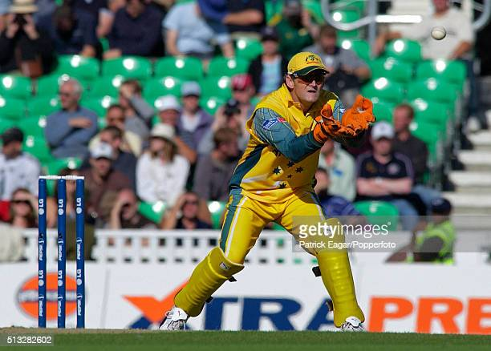
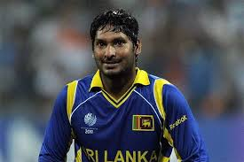

Adam Craig Gilchrist is an Australian cricket commentator and former international cricketer and captain of the Australia national cricket team. He was an attacking left-handed batsman and record-breaking wicket-keeper, who redefined the role for the Australia national team through his aggressive batting. Widely regarded as one of the greatest wicket-keeper-batsman in the history of the game, Gilchrist held the world record for the most dismissals by a wicket-keeper in One Day International (ODI) cricket until it was surpassed by Kumar Sangakkara in 2015 and the most by an Australian in Test cricket.
His strike rate is amongst the highest in the history of both ODI and Test cricket; his 57 ball century against England at Perth in December 2006 is the fourth-fastest century in all Test cricket. He was the first player to have hit 100 sixes in Test cricket. His 17 Test centuries and 16 in ODIs are both second only to Sangakkara by a wicket-keeper. He holds the unique record of scoring at least 50 runs in successive World Cup finals (in 1999, 2003 and 2007). His 149 off 104 balls against Sri Lanka in the 2007 World Cup final is rated one of the greatest World Cup innings of all time. He is one of the only three players to have won three World Cup titles.

2.KUMAR SANGAKKARA
Kumar Chokshanada Sangakkara is a Sri Lankan cricket commentator, former professional cricketer, businessman, ICC Hall of Fame inductee, and the former president of Marylebone Cricket Club. He is widely regarded as one of the greatest batsmen in the history of the sport. He was officially rated in the top three current batsmen in the world in all three formats of the game at various stages of his international career. He is the current coach of Rajasthan Royals IPL team. Sangakkara scored 28,016 runs in international cricket across all formats in a career that spanned 15 years.At retirement, he was the second-highest run-scorer in ODI cricket, next only to Sachin Tendulkar, and the sixth-highest run scorer in Test cricket.
As a player, Sangakkara was a left-handed top-order batsman and was also a wicket-keeper for a large proportion of his career. Sangakkara holds many Test records, having been the fastest, or joint-fastest (in terms of innings) to various run milestones in Test cricket. Sangakkara's partnership with Mahela Jayawardene was the second most prolific in the history of Test cricket. Additionally, he holds the record for the most wicket keeping dismissals in ODI cricket.

3. MS DHONI
Mahendra Singh Dhoni is an Indian professional cricketer who was captain of the Indian national cricket team in limited-overs formats from 2007 to 2017 and in Test cricket from 2008 to 2014. He is a right-handed wicket-keeper batsman. He led the team to three ICC trophies including the 2007 ICC World Twenty20, 2011 ICC Cricket World Cup and 2013 ICC Champions Trophy. Under his captaincy, India won the Asia Cup two times, in 2010 and 2016. India also won ICC Test Championship Mace two times in 2010 and 2011 under his leadership. He is considered as one of the greatest Captains and Wicket Keeper-Batsmen of all time. Throughout his 15 year long international career, Dhoni has won several awards and accolades.
In Indian domestic cricket he played for Bihar and Jharkhand Cricket team. He is the captain of Chennai Super Kings (CSK) in the Indian Premier League. He captained the side to championships in the 2010, 2011, 2018 and 2021 editions of IPL league. Also under his captaincy Chennai Super Kings (CSK) Won Champions League T20 two times, in 2010 and 2014.